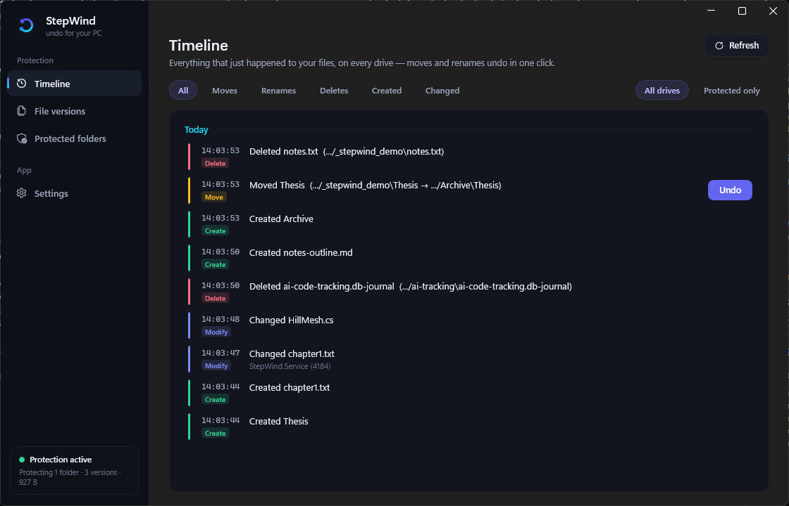
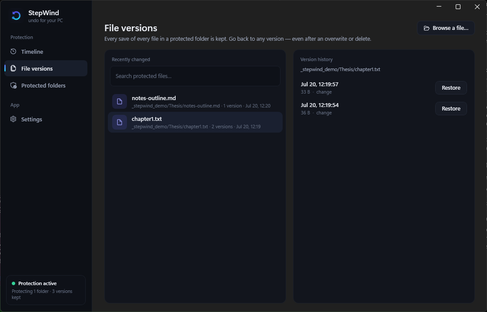
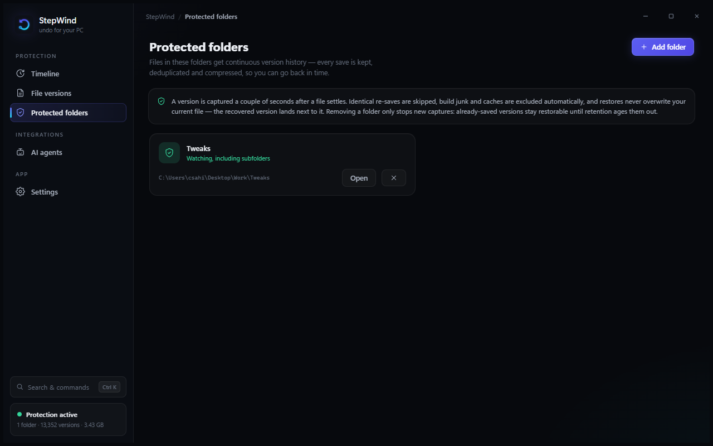

An undo button for your whole PC.
Real-time protection against accidental moves, renames, deletes, and bad saves — for everyone, not just people who use git. Free, open source, 100% local: no cloud, no account, no telemetry.
Windows 10 (1809+) or 11 · x64 or ARM64 · MIT licensed

What it does
A flight recorder for your machine
StepWind reads the NTFS change journal on every drive and shows a plain-English timeline of what happened — "Explorer moved Thesis to Archive". A move, rename, or delete is reversed with one click.
A time machine for your folders
Chosen folders get continuous version history — content-defined, deduplicated, compressed. Roll a file back to any earlier save, even after it was overwritten and deleted. A lightly-edited 2 GB file doesn't cost 2 GB per save.
A safety net for AI agents
An MCP server lets tools like Cursor and Claude checkpoint a file before a risky edit, diff exactly what changed, and restore — read + additive only, so an agent can never delete history or change settings.
Safe by construction
Restores never overwrite your current work. Reversal refuses an occupied path. History is space-managed and pauses (loudly) if the disk runs low. On a shared PC, one account can't read or purge another's history.
Encrypted at rest, recoverable
Optional AES-256-GCM (file contents and, if you want, the index too), with an exportable passphrase recovery key so encrypted history survives an OS reinstall.
Yours, entirely
Everything stays on your machine. No cloud, no account, no telemetry, no ads. Open source under MIT — read every line.
How it works
- Install & forget. A background service watches your drives; the tray app is where you look when something goes wrong.
- Something goes wrong. You move a folder by accident, or overwrite a good draft. Press Ctrl+Shift+Z from anywhere.
- Undo it. The timeline shows the operation — click Undo to move it back, or Restore to bring back a deleted file's saved version.


Install
Download StepWind-x.y.z-setup.exe (or the -arm64 build on ARM) from the latest release and run it.
SHA256SUMS.txt; verify your download in PowerShell:
(Get-FileHash .\StepWind-x.y.z-setup.exe -Algorithm SHA256).Hashand compare it to the matching line. Free code signing (which removes this prompt) is on the way via the SignPath Foundation open-source program.
Updates are verified before they install (SHA-256 + code signature); an unsigned build is never run silently — it's staged and offered as a one-click install you approve. See the security model for the full trust story.